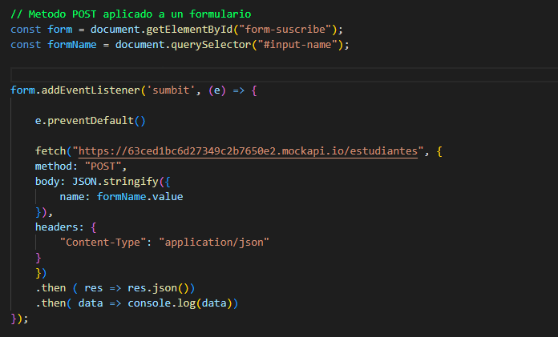

Temario de la clase:
- Ajax
- Fetch
AJAX
Ajax es una técnica de desarrollo web que permite a los sitios web actualizar dinámicamente el contenido sin necesidad de actualizar la página completa. Esto se logra mediante el uso de JavaScript asíncrono para enviar y recibir datos del servidor en segundo plano. Esto permite a los sitios web crear una experiencia de usuario más rica y dinámica.
Que es una API?
Una API (Application Programming Interface) es una interfaz de programación de aplicaciones que permite la comunicación entre diferentes componentes de software. Por ejemplo, JavaScript puede utilizar una API para acceder y obtener datos de una base de datos. Una API tiene puntos finales (endpoints) que organizan la información de los recursos disponibles.
Que es FETCH?
Fetch es un método asíncrono (promesa) que permite hacer peticiones a una base de datos utilizando JavaScript. El método fetch() se utiliza para realizar la petición y se le pasa como parámetros la url y un objeto de opciones. Con fetch se pueden hacer hasta 5 tipos de peticiones: GET para obtener información, POST para dar de alta información, PUT o PATCH para modificar los valores de un elemento preexistente, y DELETE para borrar un elemento preexistente.
Existen dos tipos de parámetros de URL que se utilizan para enviar información a una API: los parámetros de la URL y los parámetros de consulta.
Los parámetros de la URL se establecen al final de un endpoint (una parte de la URL que indica a la API qué recurso se está solicitando) y representan un recurso específico en el servidor. Por ejemplo, en la siguiente URL "https://rickandmortyapi.com/api/character/100", el número 100 representa un recurso específico en el servidor, específicamente el personaje con ID 100.
Los parámetros de consulta, por otro lado, se utilizan para enviar información adicional a la API. Estos parámetros se definen en forma de clave/valor y se separan por el símbolo '&'. La información se agrega a la URL después del símbolo '?', y cada parámetro se separa con el símbolo '&'. Por ejemplo, en la siguiente URL "https://newsapi.com/search?q=technology&from=2022-01-01&to=2022-12-31&sort_by=relevance" los parámetros de consulta incluyen "q=technology", "from=2022-01-01", "to=2022-12-31" y "sort_by=relevance". Estos parámetros de consulta indican a la API que se está buscando noticias relacionadas con la tecnología, desde el 1 de enero de 2022 hasta el 31 de diciembre de 2022, y que se ordenen por relevancia.
FETCH a JSON
También se puede utilizar fetch para acceder a un archivo JSON alojado en nuestra carpeta local. El proceso es similar al uso de una API, con la diferencia de que en lugar de acceder a una URL externa, se accede a un archivo local mediante su ruta.
Por ejemplo, si tenemos un archivo JSON llamado "datos.json" alojado en nuestra carpeta "archivos", se puede hacer una petición GET utilizando fetch de la siguiente manera:
En este caso, la función fetch() está accediendo al archivo "datos.json" y utilizando el método .then() para procesar la respuesta y obtener los datos en formato JSON. Los métodos POST, PUT, PATCH y DELETE también se pueden utilizar de la misma manera, solamente cambia la URL a la que se hace la petición.
Metodos / Peticiones HTTP
GET: El método GET es utilizado para obtener información de una base de datos mediante una petición HTTP. En el ejemplo proporcionado, se utiliza la función fetch() para acceder a la API pública "https://rickandmortyapi.com/api/character" y se utiliza el método .then() para procesar la respuesta y obtener los datos en formato JSON. En algunas APIs privadas, se requiere una APIKEY para poder acceder a los datos, que puede ser enviada a través de la URL o en un encabezado.
POST:El método POST se utiliza para enviar información a una base de datos mediante una petición HTTP. En el ejemplo proporcionado, se utiliza la función fetch() para enviar una petición POST a la URL "https://63ced1bc6d27349c2b7650e2.mockapi.io/estudiantes" con el nombre de un nuevo estudiante en el cuerpo de la petición. También se muestra cómo se puede enviar una petición POST a través de un formulario utilizando el evento onsubmit.
PUT y PATCH:Los métodos PUT y PATCH se utilizan para actualizar información existente en una base de datos mediante una petición HTTP. PUT reemplaza completamente un recurso existente mientras que PATCH solo actualiza una propiedad específica del recurso. En ambos casos, se utiliza la función fetch() para enviar la petición al servidor con la información actualizada en el cuerpo de la petición.
DELETE: El método DELETE se utiliza para eliminar un recurso existente de una base de datos mediante una petición HTTP. En el ejemplo proporcionado, se utiliza la función fetch() para enviar una petición DELETE a la URL especifica del recurso que deseamos eliminar. El código HTTP de respuesta para una petición DELETE exitosa es 204 No Content. Es importante tener en cuenta que una vez que se ha eliminado un recurso, no se puede recuperar, por lo que se debe tener precaución al utilizar este método. Es importante también tener en cuenta que algunas APIs pueden requerir autenticación o autorización específica para poder utilizar el método DELETE. Es importante asegurar que solo personas autorizadas tengan acceso a esta función, ya que eliminar un recurso de manera accidental o no autorizada puede tener consecuencias graves.
ASYNC y AWAIT
Sugar Syntax aplicada en FETCH
Esta sintaxis es una forma simplificada de utilizar fetch que facilita la lectura y el entendimiento del código.
La palabra clave "async" se utiliza para indicar que una función es asíncrona y la palabra clave "await" se utiliza para esperar a que una promesa se resuelva antes de continuar con la ejecución del código. En este caso, se utiliza "await" para esperar a que la respuesta de la petición fetch se resuelva antes de procesar los datos y enviarlos al DOM.
En cuanto a como enviar elementos al DOM con la información a la que estamos haciendo fetch, se crea una función card() que recibe un array como parámetro, se recorre ese array y se va creando un nodo con la información de cada elemento, se le da formato y se va concatenando con una variable acumuladora, esa variable acumuladora se le asigna al elemento del DOM